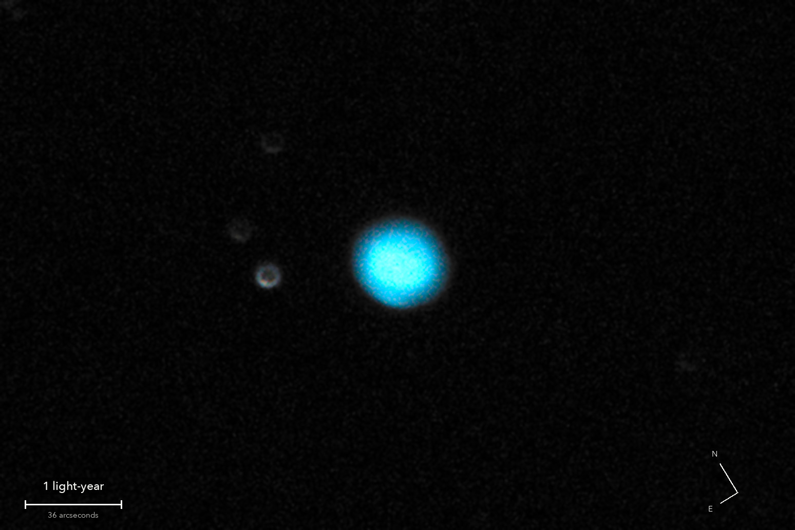

The Blue Snowball
NGC 7662, a planetary nebula in Andromeda
A star like our Sun at the end of its life, puffing its outer layers into space. Its exposed core makes the gas glow; the blue-green is oxygen. The Sun will do this in about 5 billion years.
What you are looking at

Swipe sideways to see the rest. Tap the picture for full size.
- Distance
- Roughly 5,700 light-years (not well known)
- The shell is
- About 0.8 light-years across: 50,000 times the Earth to Sun distance
- The light left
- Before the pyramids were built
- Honest note
- Taken before the telescope was refocused, so it is soft
For photographers
The first deep-sky target of the night, shot before the focus was fixed.
- Exposures
- 25 x 6 s at ISO 1600: 2.5 minutes
- Frames
- 25 taken, all kept
- Sampling
- 0.194 arcsec per pixel: the sensor's 0.388 enlarged 2 x by Lanczos. Stars are rings 7 arcsec across: out of focus
- Field
- 5.0 x 3.3 arcmin, cropped from one sensor frame
- When
- 3 October 2026, late evening. 84 degrees up, no Moon
- Field rotation
- 0.5 degrees in 10 minutes, corrected in registration
- Calibration
- None beyond a fitted sky. No flat, no darks
- Stacking
- RAW colour planes (no demosaic), hot pixels by 3 x 3 median, registered on stars with rotation, sigma-clipped mean: noise 4.8 times lower than one frame
- Finish
- Black 26 and white 194 of 255, S-curve 0.2. Saturation x 1.4; dark sky shown without colour and smoothed
- Telescope
- Celestron 8SE Schmidt-Cassegrain with dew shield: 203 mm aperture, 2,084 mm focal length (measured by plate solve), f/10.3
- Camera
- Sony a6000, stock, at prime focus: APS-C 23.5 x 15.6 mm, 6000 x 4000, 3.9 micron pixels, RAW
- Mount
- Sky-Watcher EQ6-R, unguided. Set down 27 degrees off the pole; both axes driven from a pointing model fitted to plate solves. Residual drift about 0.1 arcsec per second
© 2026 Brad Gessler · Celestron 8SE (8 inch, 2,080 mm) and Sony a6000 on an EQ6-R · San Francisco Bay Area · 4 October 2026
Capture and mount: Observatory (Elixir on a Raspberry Pi 3). Stacking: numpy, OpenCV, rawpy. Plate solving: astrometry.net. Stacked from the camera's RAW frames. Nothing generated.
© 2026 Brad Gessler. The pictures and the words are his own; all rights reserved.